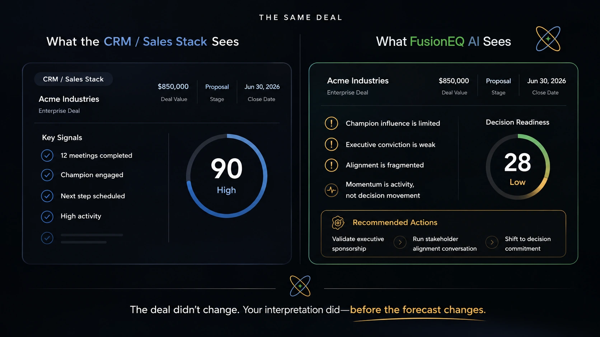

Deal Readiness Report
The report shows what the deal has and has not proven.
The Deal Readiness Report is the customer-facing output from FusionEQ AI Situational Deal Assessment™. It shows what is evidenced, what remains unproven, the readiness pattern, who appears to be carrying the decision, and what move can create decision clarity next.
It helps explain why
- active deals stall late
- engagement does not always equal readiness
- strong champions fail internally
- forecast confidence becomes distorted
- recorded activity is not the same as buyer evidence
Open the readiness pattern behind the report
FusionEQ reviews the complete deal context for patterns behind visible activity: false momentum, unclear decision ownership, influence that has not yet been identified, process confusion, and buyer movement that has not yet been proven.

Beyond Deal Activity
The pipeline records the deal. FusionEQ reads the decision path.
FusionEQ does not replace CRM, methodology, leadership, or seller judgment. It strengthens judgment by reading the field context your team already brings forward.
AI can surface patterns, inconsistencies, and visible risk indicators. Human judgment interprets what those signals mean: hesitation, trust, influence, ownership, and the next move that can improve the outcome.

The deal did not change. The read did.
Open the decision-readiness sequence
Deal conversations, stakeholder signals, meeting notes, emails, calls, forecast input, and field judgment shared by the team.
Decision dynamics, alignment quality, hesitation, ownership, urgency, trust, and readiness.
What activity means, what remains unproven, and what buyer-owned action should create clarity next.

The goal is not more data. The goal is clearer deal judgment.